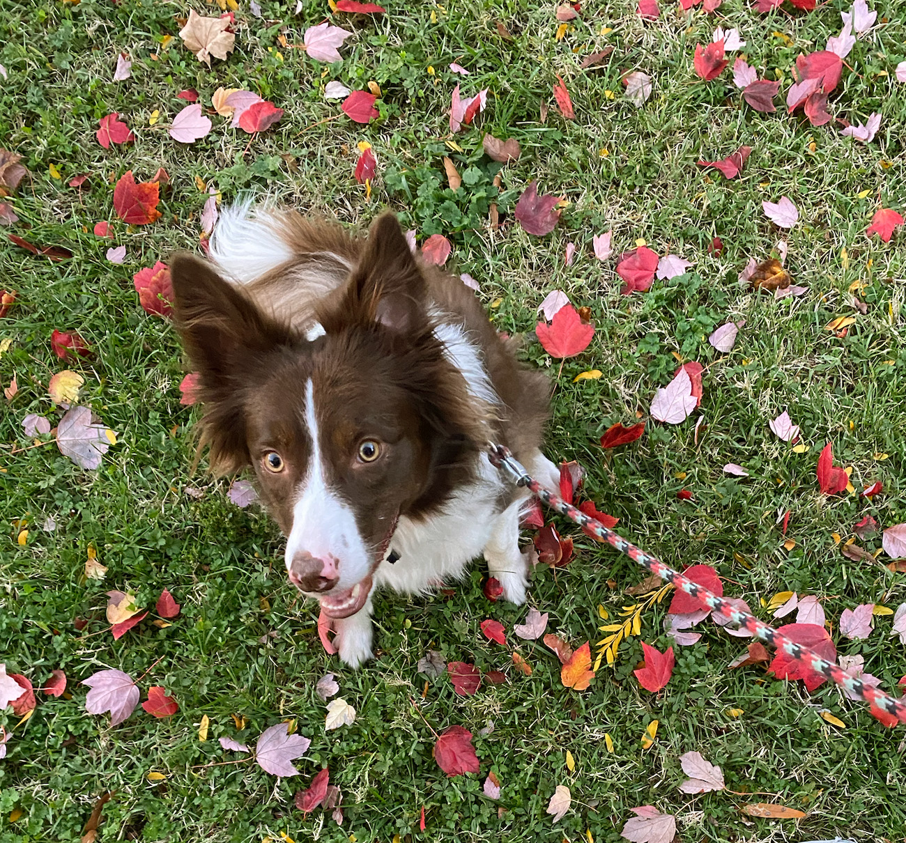
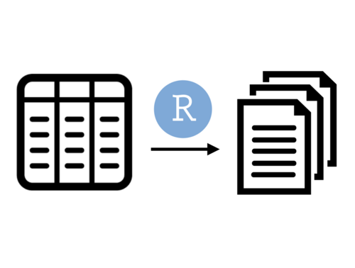

This is where I sometimes write about what I’m up to related to R, data science, and statistics. My dog, Millie, tags along in the thumbnails. I hope folks find some of these notes useful.Subscribe via RSS

